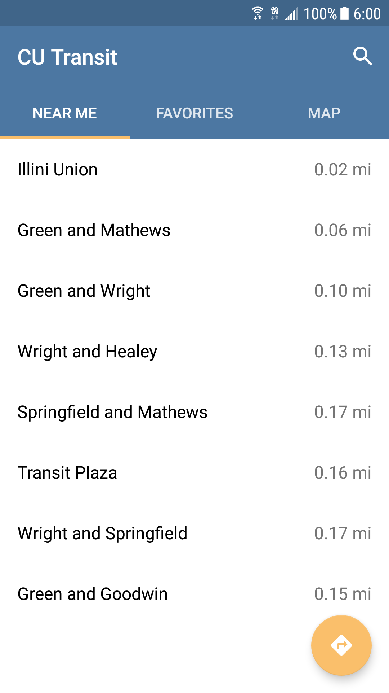
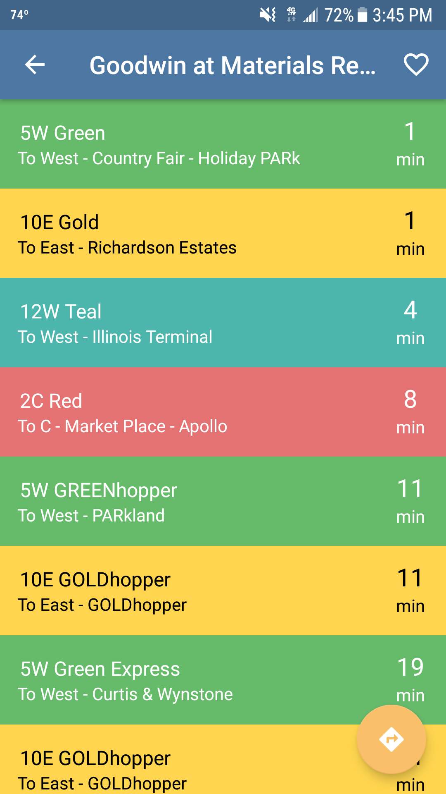
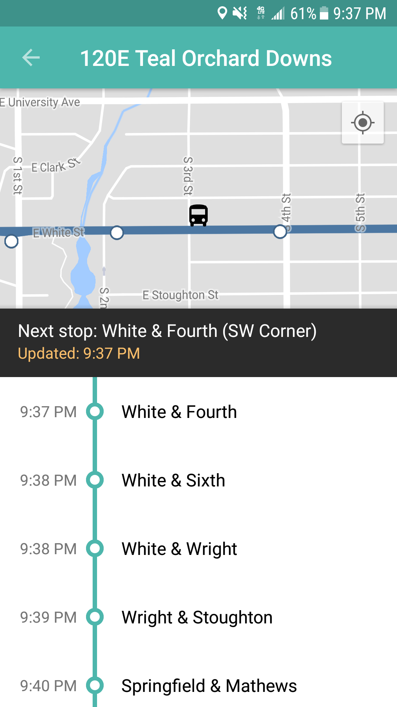
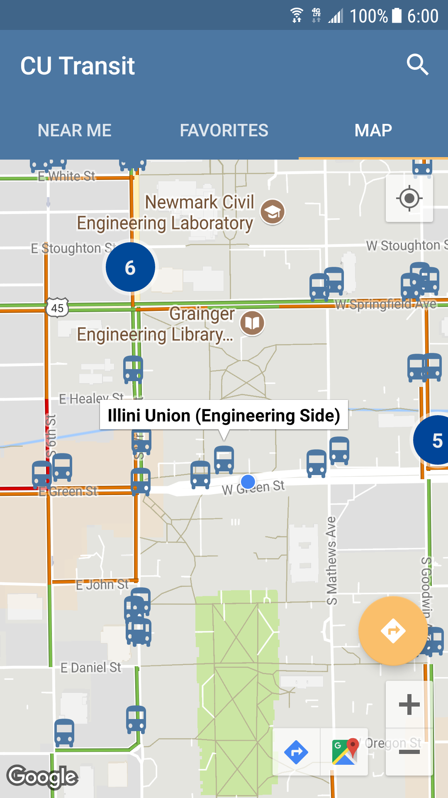
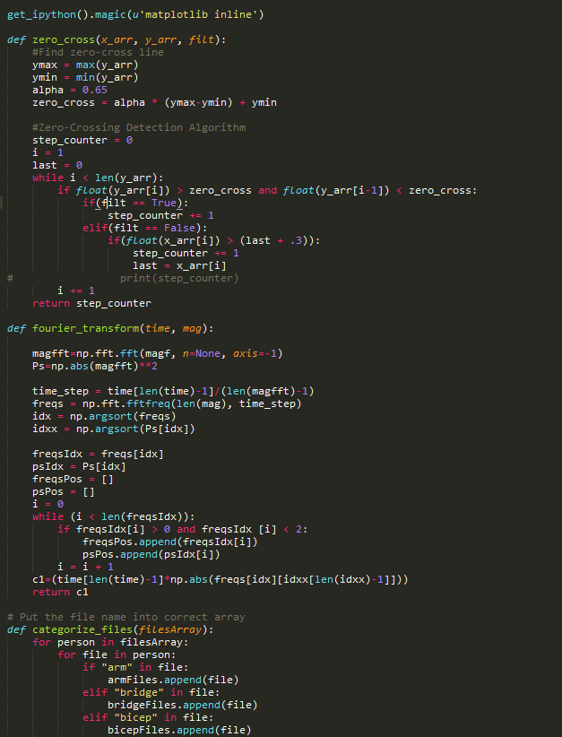
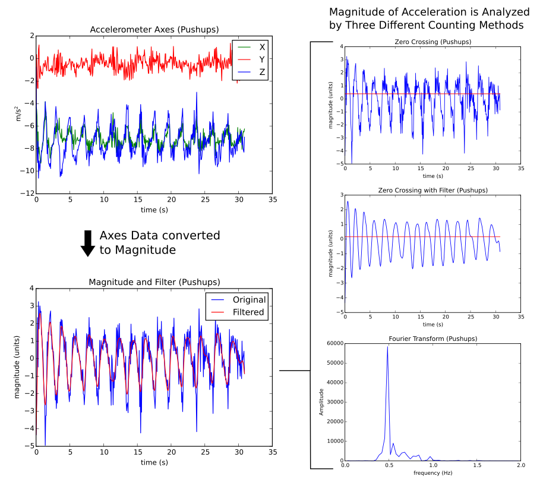
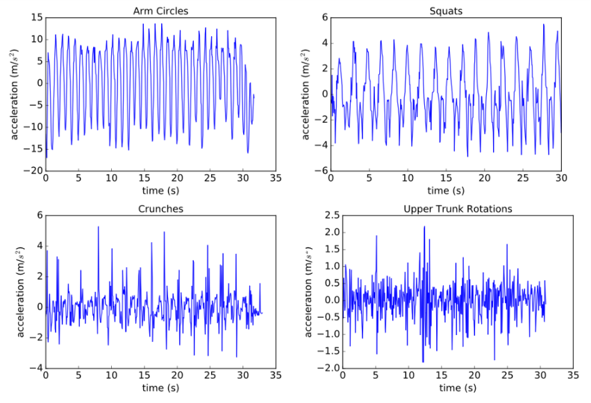
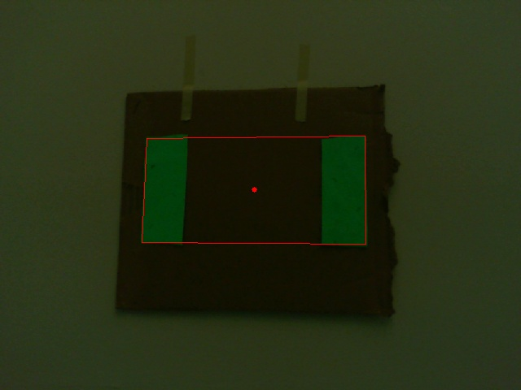

Projects
CU Transit: Bus and Navigation
   CU Transit is an Android app that tracks bus departures in Champaign-Urbana by using data from CUMTD (Champaign-Urbana Mass Transit District) in real-time. This is my first mobile application. Through this experience, I learned how to use RESTful API's, create and make changes to a database (SQLite), and troubleshoot bugs users were having without being able to replicate it. CU Transit currently has over 1200 downloads since being released on July 27, 2017.
Accelerometer-Based Counting of Arbitrary Repetitive Motions
  A research project completed at Loyola University Chicago from August 2015-May 2016. The purpose of the project was to create a program that could count the repetitions of any general motion rather than being tailored towards a specific exercise, such as number of steps or pushups. The middle picture above shows the three different analysis methods we tested. We were able to achieve an accuracy of 80.75% which improved upon research done in other studies.
FIRST Robotics

Titan Robotics Team 2022. As a programming subteam, we coded the robot in Java using the WPILIB library which was used to create autonomous programs based on sensor readings. The vision processing system, using green leds to light up several game elements, was coded in Python. This code was run on an Raspberry Pi placed on the robot and communicated with the main computer to provide further feedback for autonomous programs.